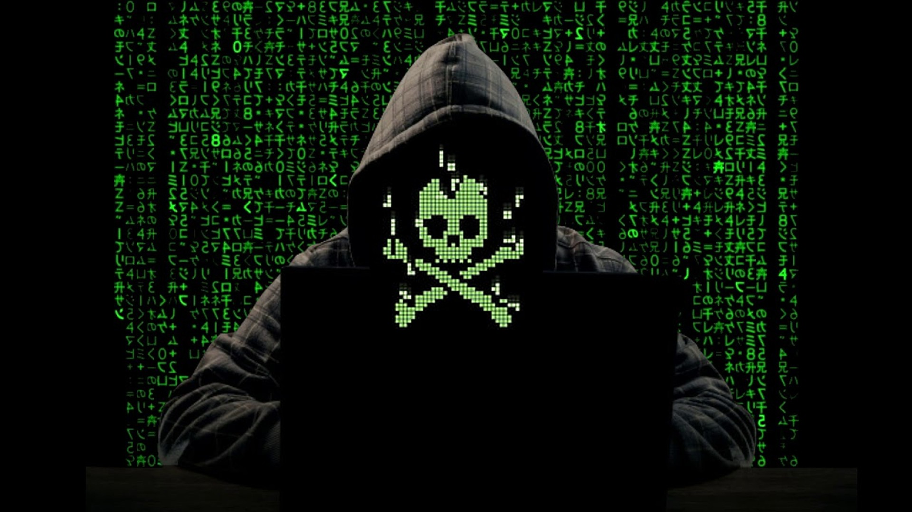

Segurança na Internet: o que é e como se proteger online?
A segurança da Internet é um ramo da segurança do computador. Ele abrange a Internet, a segurança do navegador, a segurança do site e a segurança da rede conforme se aplica a outros aplicativos ou sistemas operacionais como um todo.
Definição e significado
Segurança na Internet é um termo que descreve a natureza das atividades e transações realizadas na Internet.
É um elemento particular de ideias mais amplas, como segurança virtual e segurança de computadores, envolvendo coisas como segurança de navegador, comportamento online e segurança de rede.
Passamos grande parte de nossas vidas online e algumas das ameaças à segurança da Internet que encontramos incluem:
Hacking, quando usuários não autorizados obtêm acesso a computadores, contas de e-mail ou sites.
Vírus ou malware, que podem danificar os dados tornando os sistemas vulneráveis a outras ameaças.
Roubo de identidade, onde os criminosos podem roubar informações pessoais e financeiras.
Indivíduos e organizações podem se proteger de tipos de ameaças praticando a segurança na Internet.

Quais são as ameaças mais comuns à segurança na Internet?
Para garantir a privacidade e segurança na Internet, é importante conhecer os diferentes tipos de ataques. As ameaças comuns à segurança na Internet incluem:
Phishing
Phishing é um ataque cibernético envolvendo e-mails enganosos.
Os hackers tentam enganar os remetentes da mensagem de e-mail para acreditar que é genuíno e relevante, uma solicitação sua ou uma nota de um colega, por exemplo, para que eles em um link ou abram um anexo.
O objetivo é enganar as pessoas para que entreguem informações pessoais ou baixem malware.
O phishing é uma das ameaças mais antigas à Internet, que remonta à década de 1990.
É popular até hoje porque é uma das maneiras mais baratas e fáceis de criminosos roubarem informações.
Recentemente, as técnicas e mensagens de phishing estão se tornando mais sofisticadas.
Hacking e acesso remoto
Hackers estão sempre procurando explorar vulnerabilidades de um sistema de rede privada para que possam roubar arquivos e dados confidenciais.
A tecnologia de acesso remoto dá a eles outro alvo a ser explorado.
O software de acesso remoto permite que os usuários acessem e controlem um computador de remotamente, e a pandemia, com mais pessoas trabalhando remotamente, o uso aumentou.
O protocolo que permite aos usuários controlar um computador conectado à Internet é chamado de Área de Trabalho Remota ou RDP.
Como empresas de todos os tamanhos usam RDP, os riscos de uma rede ser insuficientemente segura são altos.
Hackers usam técnicas diferentes para explorar vulnerabilidades até que tenham acesso total a um e seus dispositivos.
Eles podem roubar dados ou vender na dark web.
Ameaças a Wi-Fi, público ou doméstico
O Wi-Fi público apresenta riscos porque a segurança dessas redes, em cafés, shopping centers, hotéis, restaurantes, entre outros, é geralmente inexistente.
Falta de meios de segurança cibercriminosos e ladrões de identidade podem monitorar o que você está fazendo e roubar suas senhas e informações
Outros perigos do Wi-Fi incluem:
Packet Sniffing - Atacantes monitoram e interceptam dados descriptografados enquanto viajam por uma rede não segura.
Ataques man-in-the-middle - invasores comprometem um ponto de acesso para se inserirem em comunicações entre a vítima e o ponto de acesso para interceptar e modificar dados de trânsito.
Redes Wi-Fi criminosas - os invasores estabelecem um honeypot na forma de uma conexão Wi-Fi gratuita para dados valiosos.
O hotspot do invasor se torna o veículo para todos os dados trocados na rede.
Como proteger seus dados on-line
Se você está se perguntando como garantir proteção na Internet e como proteger seus dados on-line, confira estas dicas úteis de segurança na Internet:
Ative a autenticação multifatorial sempre que puder
A autenticação multifator é um método de autenticação que exige que os usuários forneçam dois ou mais métodos de verificação para uma conta online.
Por exemplo, em vez de apenas pedir um nome e uma senha , a autenticação multifator pede outros adicionais, como:
Uma senha de uso único adicional que os servidores de autenticação do site enviam para o telefone ou e-mail do usuário.
Respostas a perguntas de segurança pessoal.
Uma impressão digital ou outras informações biométricas, como reconhecimento facial ou de voz.
A autenticação multifator reduz a probabilidade de um ataque cibernético bem-sucedido.
Para tornar suas contas online mais seguras , é uma boa ideia implementar a autenticação multifator sempre que possível.
Você também pode considerar o uso de um aplicativo de autenticação de terceiros Google Authenticator e Authy para ajudar na segurança